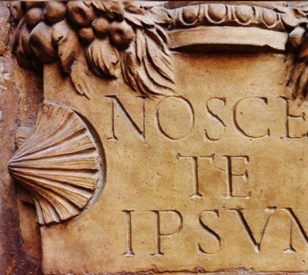

Аштанга-йога: восемь ступеней йоги по Патанджали
Послушайте аудио
Надеюсь, вы были в Индии и имеете представление об этой многообразной и мультикультурной стране. А кто-то даже практикует йогу. Какое-либо направление или стиль. Тогда вам наверняка будут интересны малоизвестные факты из прошлого, которые позволят более осознанно практиковать йогу современному человеку, познавая самого себя. А, возможно, кто-то захочет глубже разобраться в поднимаемой в этой статье теме.
Итак, с чего же всё началось?
Когда я первый раз в этой жизни попал к истокам Ганги, на меня произвели сильное впечатление мудрецы, которые встречались на узкой тропинке от Ганготри до Гомукха и в окрестностях. И не только в их энергетике дело. Между нами был языковой барьер, я не мог понимать, что они говорили на хинди, кроме интернационального приветствия — Ари Ом.:) Впечатлили меня их лица, правильные черты лица. Нигде больше в Индии я не встречал такой концентрации людей, черты лица которых так походят на живущих сейчас на территории России, Белоруссии или Украины. Очевидно, напрашивался вывод — часть народов в наших странах, имеют общие генетические корни, как следствие культурные и нравственные. Это был очередной звонок, мотивирующий лучше разобраться: почему я и в этой жизни начал заниматься йогой?
Впервые в текстах, которые дошли до нашего времени в академической науке и избежали огня пожаров, упомянул об Индии тверской купец Афанасий Никитин. Он совершил в XV веке путешествие в эту далёкую страну и принёс сведения о ней, изложенные в путевых записях «Хождение за три моря». В дальнейшем путешествия в Индию совершали в XVIII веке Филипп Ефремов и Герасим Лебедев. Последний настолько увлекся индийской культурой, что выучил бенгали, хиндустани, санскрит, прожив в Индии 12 лет. В начале XX века было открыто первое Российское императорское генеральное консульство. Его создание — фактор принципиально новых взаимоотношений между Россией и Индией. Это способствовало возрастающим торгово-экономическим связям, расширению визитов россиян в Индию и индийцев в Россию, а главное — духовному сближению двух стран.
Только ли экономические и политические отношения объединяют наши страны? Неужели наша дружба с Индией основывается только на успешной дипломатии и торговле? Современные исследования указывают, что общность наших культур тянется из глубины веков и тысячелетий. Существует гораздо тесная и тонкая связь между нами, которая едва заметна взору, но, вероятно, ощущается и передаётся на уровне генов, чувств. Разделённые горным ландшафтом, множеством промежуточных государств, историческими перипетиями, пережитыми врозь, со временем народы Руси и Индии потеряли предания и воспоминания о былой связи. Давайте посмотрим, что сейчас можно найти в сети на тему взаимосвязи наших стран, вне рамок бизнеса и дипломатии.
Намеки древних писаний, символов и знаков
Древние писания, Веда, Ригведа и Шастры, иногда описывают события на звёздном небе и другие природные явления, наблюдать которые можно находясь намного севернее территорий современной Индии. И он предположил, что возможно авторы этих писаний, проживали в северных широтах нашей планеты. Эту книгу надо читать целиком, рекомендую. В сети она есть, скачать легко.
В культурном плане между славянской культурой и древними индийскими писаниями сохраняется не только сходство, а можно это назвать параллельностью или копированием.
Языковая общность
Из наскальных надписей царя Ашоки (273–232 гг. до н. э.) и из книг выдающегося языковеда Патанджали явствует, что за 300 лет до нашей эры в Северной Индии употреблялся язык, включавший в себя несколько значительно отличавшихся друг от друга диалектов. Он возник в результате неправильного произношения арийского языка женщинами, детьми и шудрами. Этот народный язык называют пракритом от слова пракрити (природа), то есть, «естественный, деревенский, грубый». В более узком значении он называется ещё вторичным пракритом в отличие от первичного пракрита, который уже существовал во времена Вед, из которого и сложился вторичный пракрит — вульгарный санскрит. Стремясь спасти «язык богов» от испорченного пракрита, учёные-пандиты ведического периода очистили его и ограничили грамматическими нормами. Этот очищенный и облагороженный язык и был назван санскритом.
Как инструмент выражения санскрит не сопоставимо совершеннее любого современного языка. В нём совмещаются возможности передачи философской мысли и богатого ассоциативными смыслами поэтического письма. Разговорный санскрит может обходиться меньшей частью выразительных средств.